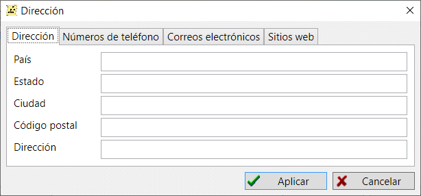

Mediante las direcciones puede definir una ubicación exacta (hasta el número de calle/casa y piso/apartamento) de un evento o hecho en una persona o entidad familiar. También puede utilizar un objeto de dirección para definir una ubicación de archivo.
Además, el objeto de dirección almacena números de teléfono, direcciones de correo electrónico y sitios web.

Ver también: Persona, Familia, Archivo, Evento/hecho.